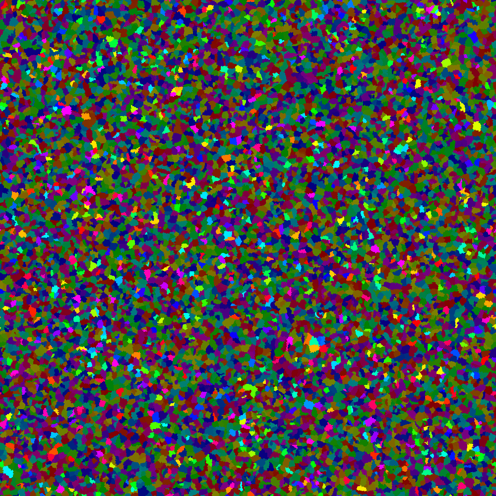

Different types of world generation
Continuous Random Noise Map
If we can make a continuous noise map, then we can generate a map based on those values. For example, we can build a simple infinite dungeon by generating a path anywhere, where the value is in the range (0.3, 0.7) or (0.4, 0.6).


You can also different layers to represent e.g. height (0.01), humidity (0.02) and temperature (0.04).


By having different scales, we get a dynamic interaction, and slow but consistent change in biomes. Overlaying these we get:

Here the colors are defined by:
h = 1 − ⌊height⌋1/12 − 0.2
s = ⌊humidity⌋1/3 + 0.3
v = ⌊temperature⌋1/3 + 0.3
File: noise_layer.py.
And you can even add extra structure (city, roads, rivers) on top:
System Random Noise
TODO: Describe why we are not using system random noise
Perlin Noise
TODO: Describe why we are not using Perlin noise
Simplex Noise
TODO: Describe why we are not using simplex noise
OpenSimplex Noise
TODO: Describe why we are using OpenSimplex noise
Chunk loading
Whenever we get close to a new chunk, we check whether we have generated it already, by checking if the file <prefix>_<x>_<y>.ill exists.
If it does not, then we run the generation script for that given chunk based on our current distance to the chunk.
Given that we want to load r chunks around us, and the generation has n levels then we must load everything at distance d to level
(r+n) − d
with a maximum of n and a minimum of 0.
This ensures that we are not loading too much at a time, and allows us to make very consistent world gen across chunk boundaries,
as any level can depend on all previous levels within a radius of a chunk.
This method also allows us to make road networks and other global structure, if we have a high enough level of generation.
Infinite world generation
Infinite worlds builds on the mechaninc described in the chunk loading and noise maps. This allows us to generate a continuous random looking world, but with consistent global structures. We could even generate full questlines this way, without it looking weird or being inconsistent, but this would require us loading alot of chunks.
We could instead generate predefined points of interest, and then whenever we load one, we just need to connect to the surounding ones. This can be done by running Astar, loading any chunk we need to walk through to a low level. That is we can do this process recursively in different scales, not just around the player, but also for global structure.
Dungeon generation
We start by generating random points, then filling in using iterative organic growth (can be done faster using Voronoi, see [Testing using random graphs]).

Selecting some areas at random
Then make a minimum spanning tree (using Prim’s algorithm allowing wrapping).
We can then normalize the map, so there is no wrapping.
We can do as we did with the noise maps.
How do we do it?
Phases of world generation
We start by making a graph that represents the order or connectivity between different areas. E.g. we could specify that the second and third areas are connected to the first, however the third area is locked, so you need to complete the second area, to unlock the third.
Using this layout method, we can write a generator for history elements, that output this area graph. Allowing us to generate all different map variations of a given history.
Now we have a graph with some restrictions, that we want to turn into a world. The way we do this, is by taking the dual of the graph, which gives us another graph that we then plot as a straight-line planar graph, by adding an outer face (triangle), then triangualting the rest of the graph to make it 3-connected and then using Tutte embedding. Once we have the embedding, we again take the dual, giving us the faces for each area.
Tutte Embedding
The Tutte embedding (drawing) of a 3-connected planar graph, is done by choosing an outer face, which is kept static, and then position the rest of the vertices by placing them at the barycentric coordinates of their neighbors. This can be done by simulating edges as springs.
$$ F_{rep} = 0 \frac{}{} $$ $$ F_{attr} = \sum_{(u,v)\in E}^{} \frac{p_v - p_u}{deg_u} $$ $$ F = F_{rep} + F_{attr} \frac{}{} $$
Triangulation
Triangulation is the process of making a graph 3-connected, this is done by spliting all faces into triangles.
Dual
Taking the dual makes vertices into faces, and faces into vertices. This allows us to transform the connectivity graph into areas. However this might not be optimal.
Testing using random graphs
Now we have a good generic algorithm for generating a map, however, we have only shown examples of small graphs. To test the algorithm we will therefore generate a large planar graph, and try to generate the map based on that.
To generate a large random planar map, we will use Delaunay triangulation (a common technique to just generate a random map), we compute it using Bowyer–Watson algorithm.
SPQR trees
An alternative to tutte embedding is using SPQR trees, which can be constructed in ùí™(n) time (hard to implement). They represent all embeddings, so generating / changing the world dynamically will be a lot easier.
There exists implementations of SPQR trees (e.g. Sage Math). However, most drawings using SPQR trees are trying to minimize the space when drawn on a grid. For our purpose, we want to improve this presentation, by using a (mixed?) integer linear program (ILP) to optimize the layout.
Inspiration: Very-large-scale integration (VLSI)
Floorplan
TODO: describe how we take an adjacency graph and transform it into areas.
In the literature, there does not exist any algorithm that talks about the existence and construction of an IFP corresponding to a given PTG.
We can use the optimization problem in “MIQP-based Layout Design for Building Interiors” to get our resulting game map!

Open source Formats: BOOKSHELF floorplan
Benchmarks: https://github.com/haoxingren/Floorplan , https://plato.asu.edu/ftp/network.html
Area script
For each area, you can write code for how it is generated. The code is structured into levels, so for the first level you can sample the layers of randomness. For the remaining levels, you can set variables and compare variables of previous levels. For the last layer, you can place objects in the world, based on the variables.
Keywords
VLSI layout, planar graph, combinatorial embedding, SQPR tree, floorplan, rectangular packing adjacency constraint